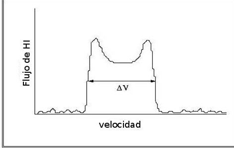
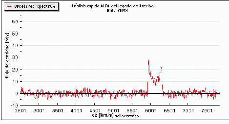

ALFALFA detecta el perfil de espectros de hidrógeno atómico de una galaxia, lo que es, la línea de flujo de hidógeno atómico sobre el intervalo de frequencia que corresponde a las velocidades radiales de todos los átomos de hidrógeno atómico en una galaxia. Por lo tanto uno de los productos de data principals de ALFALFA es el grupo de los perfiles globales de hidrógeno atómico (flujo de hidrógeno atómico versus velocidad), disponible en ingles a travéz de Conrnell
archivo de data de ALFALFA.
Nosotros utilizamos el perfil global de hidrógeno atómico de cada detección de ALFALFA para producir tres parámetros de uso científico:
- El punto medio del perfil de emisión en km/s, que produce la
velocidad systemática de la galaxia como un todo. Esto en parte puede ser utilizado para hacer un estimado de la distancia del corrimiento al rojo de una galaxia utilizando la ley de Hubble. El corrimiento al rojo de una galaxia no es nada menos que la velocidad en la que un objeto estelar se aleja de nosotros.
Hubble's law.
- El flujo total de la línea de hidrógeno atómico (HI),, integrado sobre la señal, ∫F dV, en Jy-km/s, el cual también, en parte, puede ser utilizado para derrivar el total de
masa de hidrógeno atómico, usando el estimado de la distancia.
- El ancho observado del perfil de hidrógeno atómico , en km/s, el cual nos da la observada amplificación Dopppler debido principalmente a la rotación de la galaxia. En conjunto con un estimado del tamaño de la galaxia y la inclinación en el plano del cielo , el parámetro del ancho puede ser utilizado para hacer un estimado del total de la masa dinámica de la galaxia..
|

Dibujo que muestra el aspecto típico del perfil de hidrógeno atómico de una galaxia.

Espectro actual de ALFALFA para UGC 7849. Ver el original disponible en la página oficial de CornellALFALFA archive
|